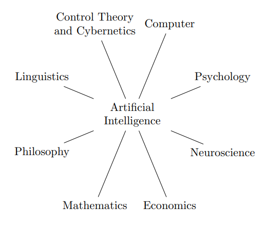
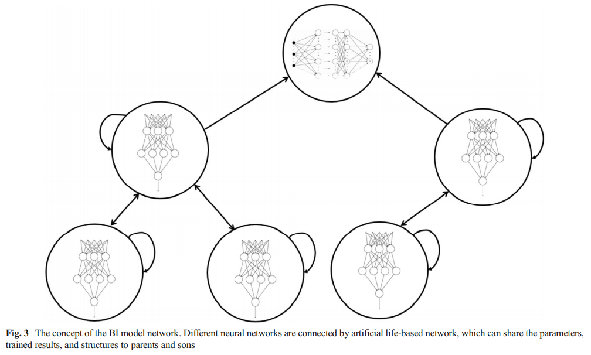
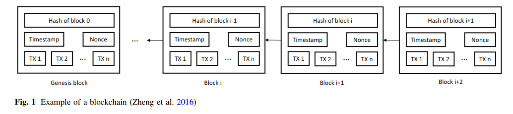
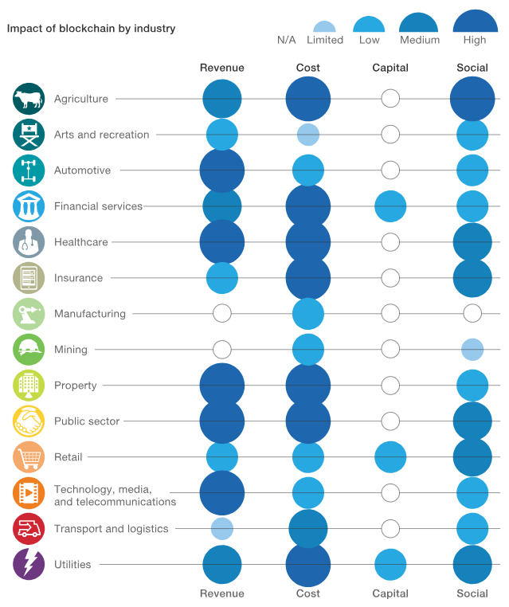

AI (Artificial Inteligence) has become one of the most discussed topics in scientific and technologcial field as it can mimic the human brain. Mondal (2020, p. 390) argues that “Therefore, AI is the study of science and engineering to build artifacts which can develop knowledge by learning from experience, reading and processing text written in natural languages, reason with the acquired knowledge (able to perform tasks such as explaining, planning, diagnosing, etc.) and acting rationally.” AI is not robots, it is more like algorithms. Today, there are 2 main types of AI. The first type is Narrow AI. In other words, it is weak AI, which can only complete one single task at times. The second type is General AI or strong AI. It can perform and study any intelectual tasks that human can do. The current AI has contributed to many aspects of our daily life from entertainment to work. Creating an AI also means involving many fields and combine them into one sophisticated technologies.

Foundation of AI by Mondal, 2020
Although AI has many advantages and advancements, the current AI is still limited. “However, the results of current artificial intelligence technologies remain limited to specific intellectual areas, such as image recognition, speech recognition, and dialogue response.” (Lu, H., Li, Y., Chen, M. et al.2018, p. 369). Current AI can only function as a part of a fully-brain.

Shortage of current AI , by Huimin Lu1, Yujie Li, Min Chen, Hyoungseop Kim, Seiichi Serikawa, 2018
The future of AI is BI (Brain Intelligence). BI can partly solve AI limitaions. “The BI intelligent learning model fuses the benefits of artificial life (AL) and AI” (Lu, H., Li, Y., Chen, M. et al.2018, p. 372).

The concept of BI model network by Huimin Lu, Yujie Li, Min Chen, Hyoungseop Kim, Seiichi Serikawa, 2018
“Machine learning is a subcategory of AI that often uses statistical techniques to give machines the ability to absorb data without explicitly receiving instructions to do so. This process is known as ‘training’ a ‘model’ using a learning ‘algorithm’, which progressively improves performance on a specific activity.” (Antonio Ostuni, para 5). Machine learning can help a computer, a machine to learn through the data obtained without being programmed to do a task. A machine learning consist of three main parts: The algorithms of making decisions, variables and features, base knowledge to enable the machine to learn.

Different categories of Machine Learning by Garry Choy, Omid Khalilzadeh, Mark Michalski, Synho Do, Anthony E. Samir, Oleg S. Pianykh, J. Raymond Geis, Pari V. Pandharipande, James A. Brink, Keith J. Dreyer, 2018

Summary of supervised and unsupervised learning paradigms and subcategories by Garry Choy, Omid Khalilzadeh, Mark Michalski, Synho Do, Anthony E. Samir, Oleg S. Pianykh, J. Raymond Geis, Pari V. Pandharipande, James A. Brink, Keith J. Dreyer, 2018
In the future, the unsupervised algorithms of machine learning will be improved. Machines use the algorithms to analyze the data and therefore came up with the result. Unsupervised algorithms can result in unexpected outcome that supervised algorithms cannot. As the world progress, more and more data has to be processed. The future of machine learning will also involed the adoption of quantum computing to have the high speed of executing dataset. One of everyone favorites is cutomization. Machine learning will able to read the customer’s pattern and giving suggestions as well as recommendations automically.

Imporatant of Data Science and Machine Learning by Scarlett Rose, 2020
Artificial Inteligence and Machine Learning plays a very imporatant role in our life and has a significant impact on almost every aspects. AI allows us to solve complex problems easily. Current apllications of AI includes virtual assiantants, robots and self-driving cars.

Applications of AI by Mondal, 2020
AI can also applied into many different fields such as medical, business, healthcare, education. In business, AI can create chatbot, manage data, manage supply chain, increase cyber security and apply in eCommerce

Benefits of AI in business by Thomas H. Davenport and Rajeev Ronanki, 2018
Machine learning is also applied in many fields as well from business, educaiton to medical, biology as well.

Clinical applications of Machine Learning in Radiology by Garry Choy, Omid Khalilzadeh, Mark Michalski, Synho Do, Anthony E. Samir, Oleg S. Pianykh, J. Raymond Geis, Pari V. Pandharipande, James A. Brink, Keith J. Dreyer, 2018
It is a fact that with the advancements and improvements with AI and ML, many jobs which require repetitive task will be disappear. However, it will also create new opportunities. Maybe in the future, each individuals will learn through a computer and teachers are no longer require. Self-driving cars services is available and there will be no taxi and bus driver. With the improved learning ability, robots can now replace human tasks and therefore, result in cutting down HR in many companies and many people will lose jobs. High risk jobs will be replaced by AI in the future to minimize human loss. In medical field, instead of a nurse, a robot impletmented by AI and ML can monitor you 24/7 and assist you anytime. Although with such advancements and convience, it is hard to apply AI and ML to some respective fields. Jobs that require peer-to-peer interations is irreplaceable by AI. AI and ML will not fully replace the current technology. However, there is undeniable that many jobs will disappear.
AI and ML improvements will definitely have a very strong impact on my daily life. With AI, I don’t have to worry about getting lost or don’t know what to do if I have free time. There will always be suggestions about where to go or what to do. I don’t have to worry about missing schedule or coming late at a meeting. Friend suggestions will base on my hobbies, patterns so that I can find a suitable friend. Through ML, I can know which one of my friends is feeling unhappy or unwell. To sum up, my life will change completely. And my new life can be more exciting but can be a bit overwhelm when I can get suggestions all the time. As for my friends, the improvements will also affect them. AI will help them to have a healthy, productive life. But there is a downside to everything. Our life can be too systematic and leads to some potential issues. We can be overwhelm by the flow of information, more prone to cyber attacks and sometimes we just feel annoyed by so much information, which can cause stress and headaches.
In the recent decades, blockchain has been recognized as one of the safest way to store information and do transactions as well. A blockchain can be considered as a very secured database. By decentralizing, it is impossible to tamper with the data once it is inside blockchain. Information, data is stored inside a “node” and it is linked to other nodes. To alter the data in blockchain, you have to make at least 51% in the total of nodes agree to the change, which takes a lot of effort and therefore blockchain is considered to one of the most secured way to strore data

Example of a blockchain by Michael Nofer, Peter Gomber, Oliver Hinz, Dirk Schiereck, 2017
The first generations of blockchain is blockchain 1.0 and began with the Bitcoin network. Blocks are linked through a complex cryptography verification process, which forms immutable chain. Founders of Etherum has established the second generation of blockchain – blockchain 2.0. And the major innovations that blockchain 2.0 could bring is the application of smart contract in many respective fields. So a smart contract is an agreement between 2 people through the computer code and the data cannot be changed. Transactions can be processed without the third party and transcations can only happen when the terms on both side is met. So it is no problem about trust issues. “Blockchain-enabled smart contracts are computer programs that are consistently executed by a network of mutually distrusting nodes, without the arbitration of a trusted authority. Smart contracts provide organizations the possibility to collaborate and execute self-enforcing contract clauses in a blockchain network without the involvement of a third-party. (Udokwu, Kormiltsyn, Thangalimodzi and Norta 2018, p. 137). In the future, blockchain can be even more secured, more efficient in management and faster transactions. The next generation is blockchain 3.0.

2 leading blockchain 3.0 projects with MimbleWimble, 2019

Applications of blockchain by Chibuzor Udokwu, Aleksandr Kormiltsyn, Kondwani Thangalimodzi and Alex Norta, 2018
Blockchain will have a signifiact impact on business field and on the market in the future. Blockchain can reduce fraud and overcharging. It is also a way for enormous data. With the improvements of blockchains, smart contract will be applied in more fields, which saves a lot time, money and resources. For accounting, blockchain can save a lot of time for auditors. They don’t have to check the authencity of a transaction and therefore, they will have more time to perform more vital tasks. Not only business field, blockchain will also affect many other aspects in life. Blockchain improvements will lead to more jobs in the future. Blockchain developer is needed in the future to create internal blockchain for companies, hospital,….”Solidity” is the main computer programming language to write blockchain so blockchain developers have to be an expert in this particular area of knowledge. Blockchain will not replace traditional database since not everyone needs blockchain in the system.

Impact of blockchain on many different fields by Ratko Stambolija, 2019
Blockchain will not affect me so much in my daily life. As for my parents, it will affect a lot. Both of my parents are accountants so having blockchain in the system is a completely new experience for them. They can save a lot of time but adapting to blockchain can also be a challenging task for them.